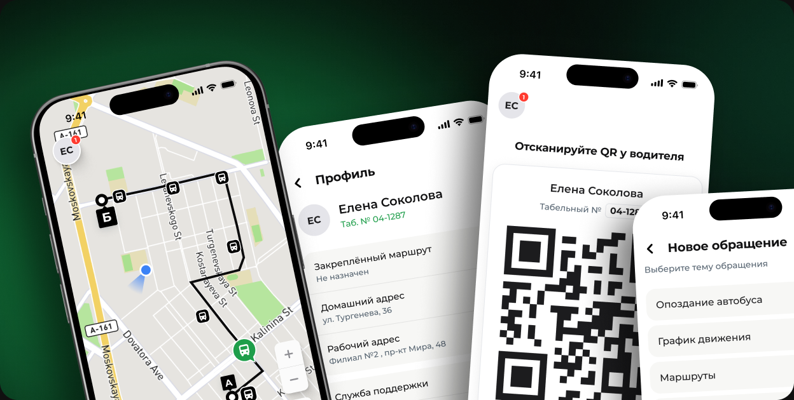
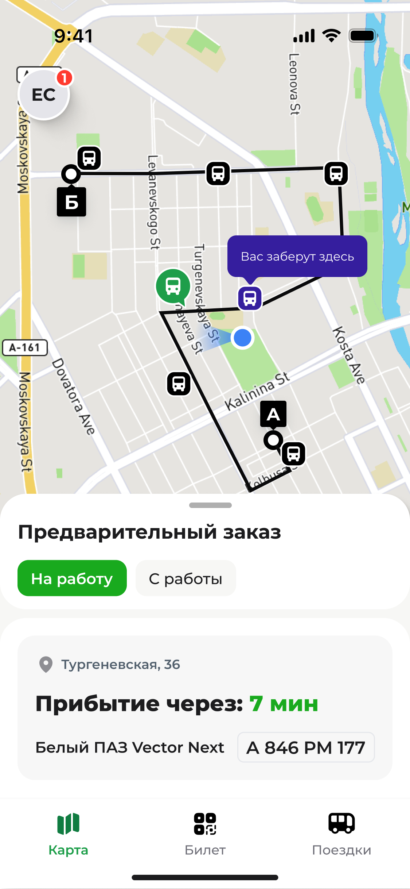
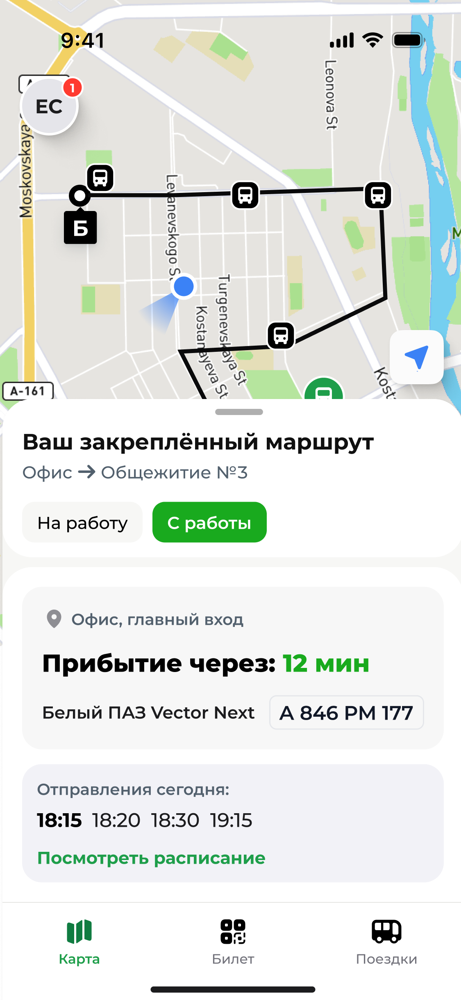
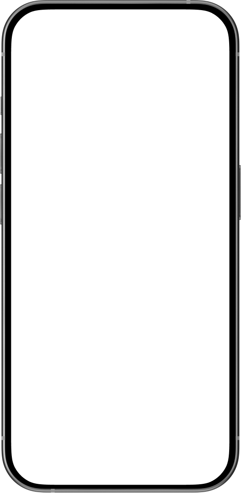
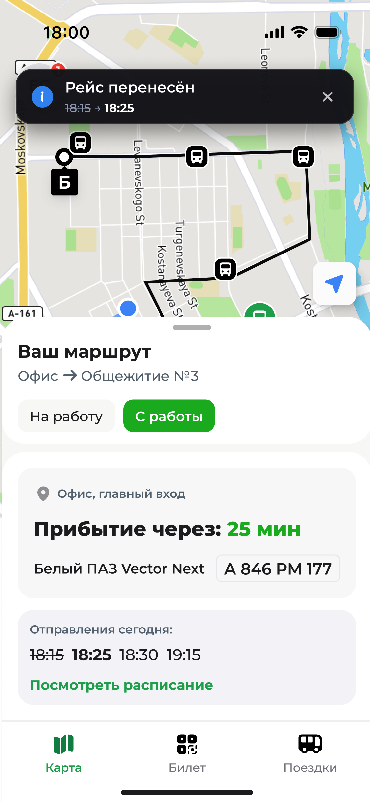
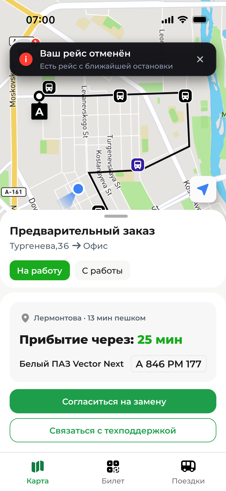
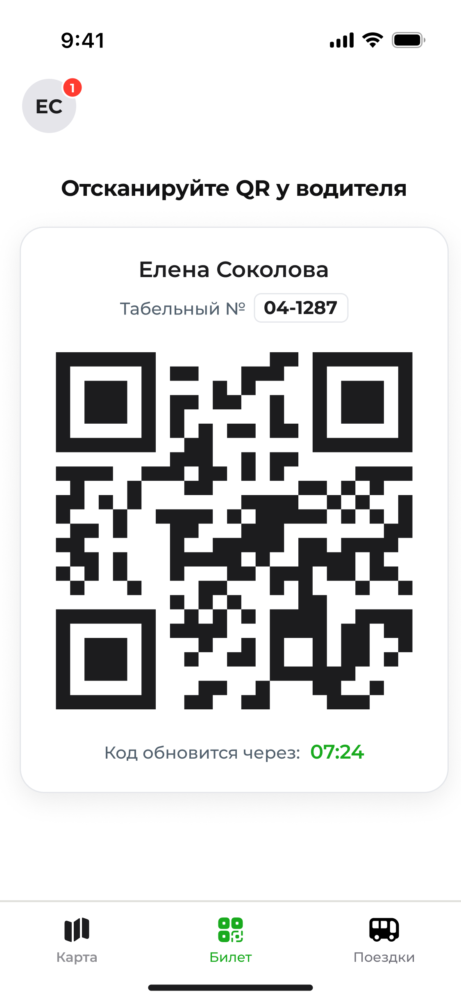

Елена Сулоева
Елена СулоеваЗадача
Спроектировать мобильное приложение, через которое сотрудники смогут организовать поездку на работу и обратно: заказать транспорт, узнать место посадки и время прибытия, предъявить QR при посадке.
Как объединить регулярные и нерегулярные поездки сотрудников в одном продукте

1 · Проблема и моя роль
Спроектировать мобильное приложение, через которое сотрудники смогут организовать поездку на работу и обратно: заказать транспорт, узнать место посадки и время прибытия, предъявить QR при посадке.
Сотрудник выбирает поездку на работу или обратно и отправляет заявку на нужный рейс.
Организация закрепляет сотрудника за рейсами. Привязка маршрута связана с табельным номером.
Проработать оба сценария от планирования до посадки и сохранить единую структуру интерфейса, чтобы при переходе на постоянный маршрут сотруднику не приходилось заново разбираться в приложении.
2 · Сценарии продукта
Оба сценария используют одинаковые элементы карты и карточки рейса — при переходе с одного варианта поездки на другой сотруднику не нужно заново разбираться в интерфейсе.
После назначения рейса сотрудник видит маршрут и отслеживает прибытие автобуса к своему адресу.
Организация назначает регулярный маршрут по табельному номеру сотрудника. В приложении доступны ближайший рейс и расписание.


3 · Предзаказ
Сотрудник самостоятельно оформляет заявку на поездку до работы или обратно. Сценарий собран в одном экране: направление, адрес, дата и время отправления.
Последовательность шагов
Направление определяет маршрут
Сотрудник выбирает «На работу» или «С работы» и указывает домашний адрес. Маршрут формируется позже с учётом заявок других сотрудников.
Адреса филиалов уже заданы
Адрес работы пользователь выбирает из заранее заданных.
Время — из доступных вариантов
Готовые слоты упрощают выбор и исключают ввод времени вне расписания.

4 · Закреплённый маршрут
Отдел кадров закрепляет маршрут за сотрудником по табельному номеру. Оформлять заявку на каждую поездку не нужно: достаточно выбрать направление «На работу / С работы», посмотреть ближайший рейс и показать билет при посадке.
Быстро понять, когда выходить
Остановка, время до прибытия и данные автобуса собраны в одной карточке.
Разделить поездки на работу и обратно
Переключатель меняет направление маршрута и показывает соответствующие рейсы.
Предусмотреть окончание рейсов
Если на сегодня отправлений больше нет, сотрудник видит пояснение и может перейти к рейсам на другую дату.
Сохранить единый интерфейс
Карта и карточки рейса используют знакомые элементы из сценария самостоятельного заказа.
Уведомление сообщает об изменении, а карточка поездки показывает актуальную информацию и доступные действия.
В уведомлении показаны прежнее и новое время отправления. Карточка рейса обновляется — сотрудник видит актуальное время прибытия автобуса.
Сотрудник получает уведомление об отмене и видит предложенную замену. Можно согласиться на другой рейс или связаться с поддержкой.


5 · Билет
Код автоматически обновляется: пересланный скриншот к моменту посадки становится недействительным. Для бизнеса это контроль доступа и учёт поездок.

QR-код — главный элемент экрана
Крупный код удобно показать водителю для сканирования.
Данные сотрудника рядом с кодом
Имя и табельный номер помогают дополнительно проверить пассажира.
Видимый статус обновления
Таймер показывает, через сколько обновится QR-код.